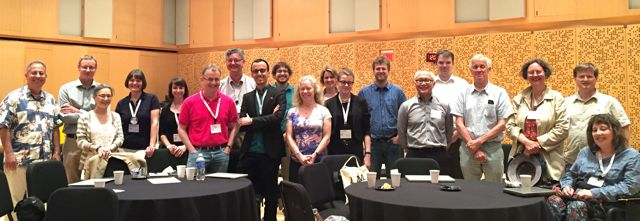
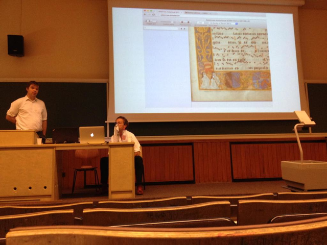
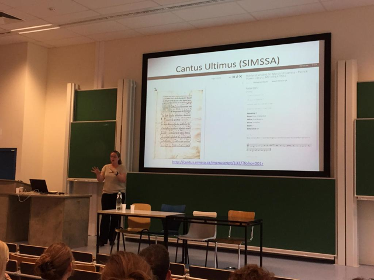
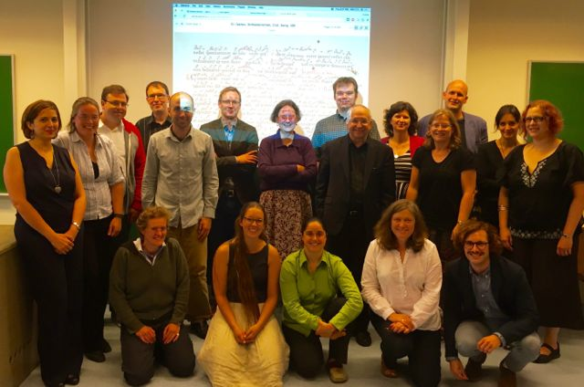
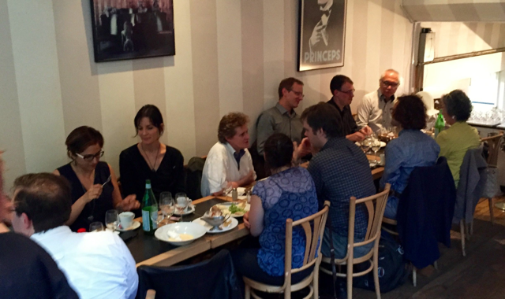

SIMSSA Summer Conferences: New York and Brussels
Posted by ehopkins on August 19, 2015
SIMSSA has had a busy summer, with many of our team travelling to present on the work we’ve been doing. Highlights include conferences in New York and Brussels, where we were able to give SIMSSA workshops and present on some of our research.
IAML/IMS in New York
The International Association of Music Libraries, Archives and Documentation Centres (IAML) and the International Musicological Society (IMS) hosted a congress on “Music Research in the Digital Age” from 21-26 June 2015. SIMSSA is, of course, all about digital music research, so several of our team members were in attendance to present on and discuss the subject.
We hosted SIMSSA Workshop VI, well-attended by the group below:

There was also a panel on the Music Encoding Initiative (MEI), chaired by Frans Wiering, featuring SIMSSA speakers including Perry Roland, Andrew Hankinson, Ichiro Fujinaga, Laurent Pugin, Johannes Kepler, and Richard Sänger. More details, including abstracts, can be found in the conference programme.
MedRen in Brussels
A little over a week later, the SIMSSA team was well-represented at the Annual International Medieval and Renaissance Music Conference in Brussels, MedRen for short (July 6-9, 2015). Check out the conference programme here for scheduling details and abstracts.
The Cantus ultimus team gave a presentation detailing a major project: “The making of the Digital Salzinnes.” This project is dedicated to adapting a 16th century Salzinnes Antiphonal into a fully-functional web interface, as a first complete test case for machine-reading chant notation in manuscript. All the text and notation will be fully searchable. Check out the presentation slides or take a look at the older version of the online interface as well as the new one we’re working on, fully integrated into the Cantus ultimus site. Jennifer Bain, Julie Cumming, Andrew Hankinson, Kate Helsen, Debra Lacoste, Barbara Swanson, and Ichiro Fujinaga were all involved in the presentation.

Pictured: Andrew Hankinson, discussing the technical challenges of building the Digital Salzinnes. (Seated is Phillipe Vendrix, session moderator and head of the Centre d’Etude Superior de la Renaissance in Tours).
In addition, Kate Helsen (pictured below) gave an update on the Optical Neumes Recognition Project, discussing the challenges of recognizing music on staff lines (neumes or otherwise). Take a look at her presentation slides or check out the video of her demonstrating a search.

We also hosted SIMSSA Workshop VII. Presentations and discussion included updates on SIMSSA’s latest work, including important components and projects such as Rodan and Verovio (open-source music engraver, rendering MEI as SVG in your browser).

This was followed by a group dinner at Mirabelle restaurant.

Back home in Montréal, our programmers have been busy too. Right now, we’re getting ready for the fall term to start and finishing off some summer coding projects. More on that soon!